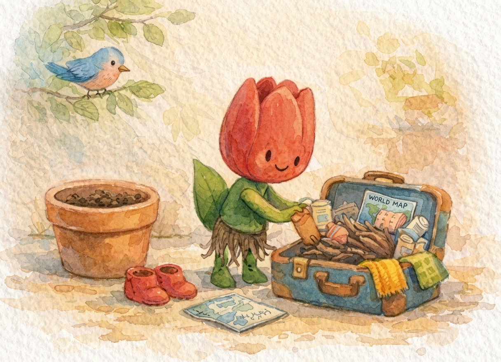
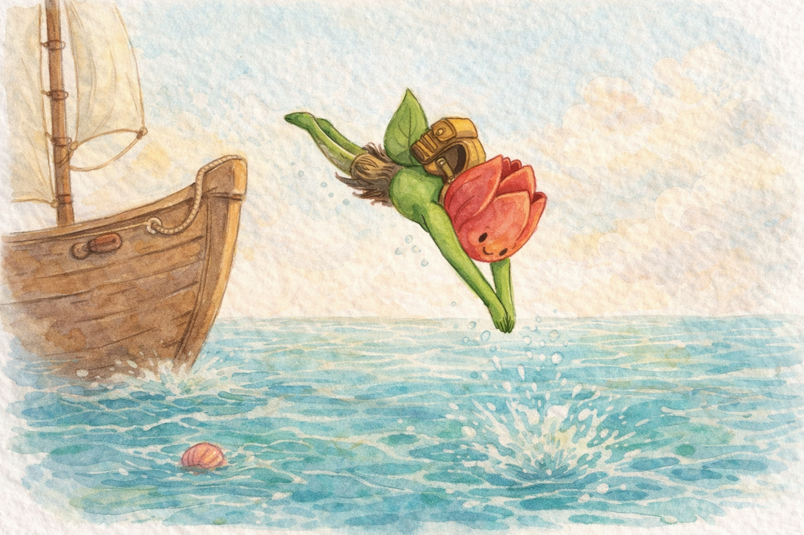
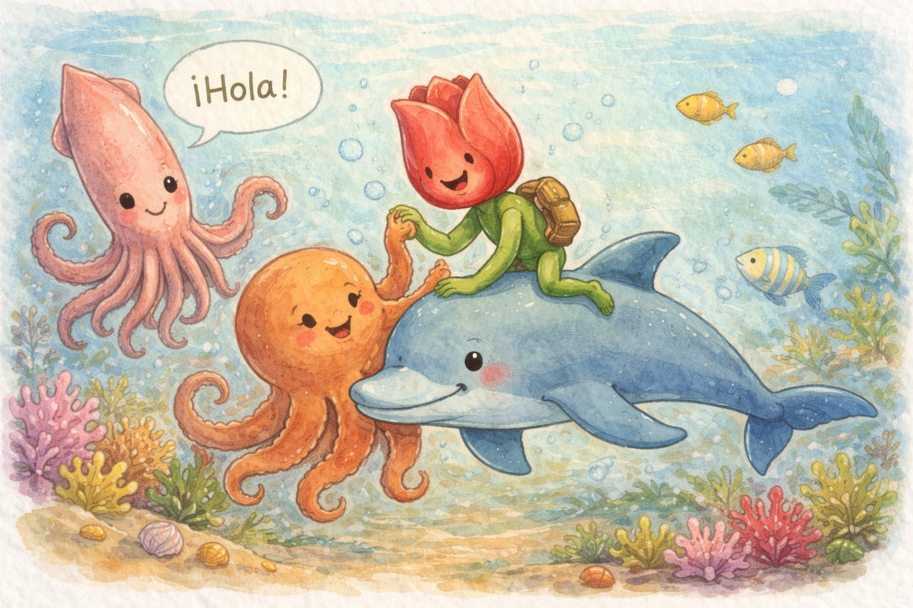
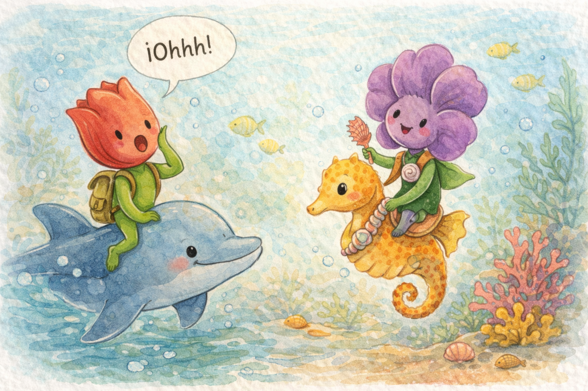
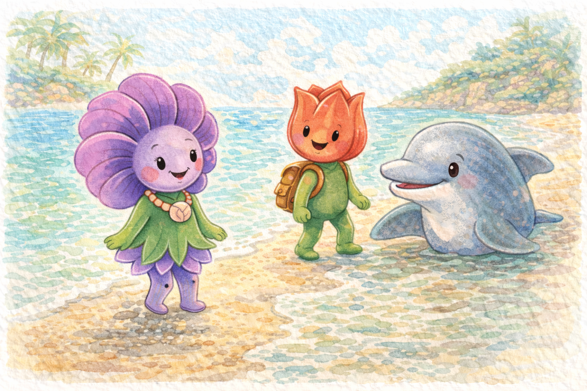
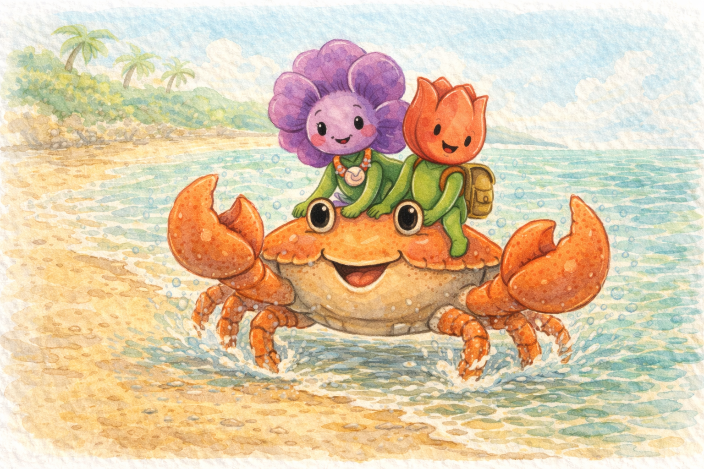
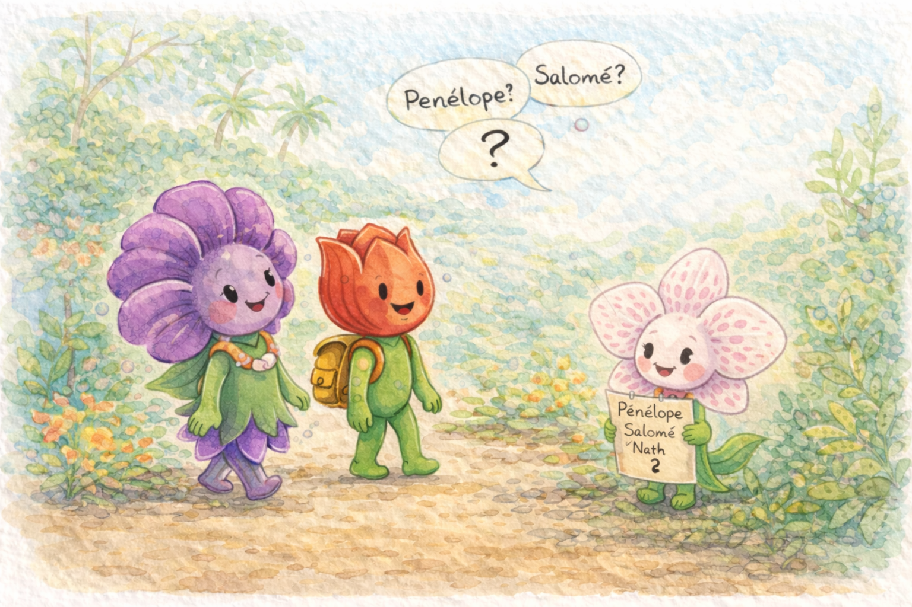

One day the Tulip got tired of being in the same pot and packed his roots in a suitcase.
🧳Un día el Tulipán se cansó de estar en la misma maceta y empacó sus raíces en una maleta.

He got on a boat and, standing on the bow, decided to swim. With an elegant dive, he entered the sea.
⛵Se subió a un barco y estando en la proa, decidió nadar. Con un elegante clavado, entró al mar.

—Hello— said a squid.
An octopus tickled him, a dolphin put him on his back to take him for a ride.
―Hola ―le dijo un calamar.
Un pulpo le hizo cosquillas, un delfín lo subió a su espalda para llevarlo a pasear.

Ohhh!
What a big surprise he got!
When he saw a violet getting on a seahorse with a snail necklace and a coral comb!
¡Ohhh!
¡Qué gran sorpresa se llevó!
Al ver una violeta subir a un caballito de mar con un collar de caracol y un peine de coral!

The violet got off at the beach. She shook her petals and looked curiously out of the corner of her eye at the dolphin, who was leaving the Tulip by her side.
🌊La violeta se bajó en la playa. Sacudió sus pétalos y miró curiosa por el rabillo del ojo al delfín, que dejaba a su lado al Tulipán.

They walked together until they found a crab, who took them for a ride.
🦀Caminaron juntos hasta encontrar un cangrejo, que los llevó a cabalgar.

And, since then, the violet and the tulip hope to find an orchid…
who maybe is named Penelope, or maybe, Salome.
Or, maybe… will change her name from time to time.
Y, desde entonces, la violeta y el tulipán esperan encontrar una orquídea…
que tal vez se llame Penélope, o tal vez, Salomé.
O, tal vez… cambiará su nombre de vez en vez.